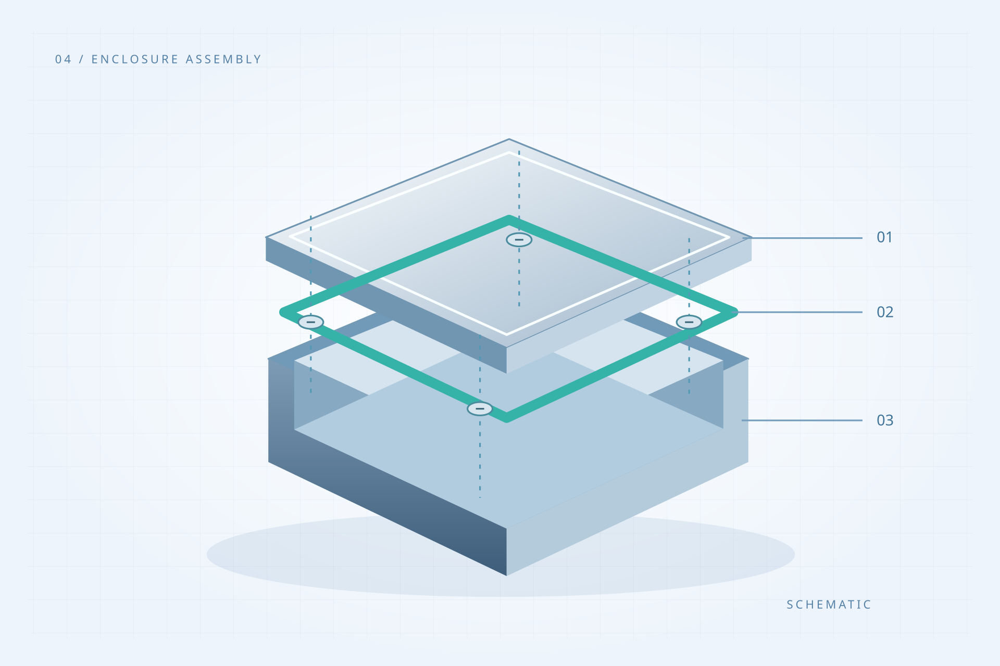
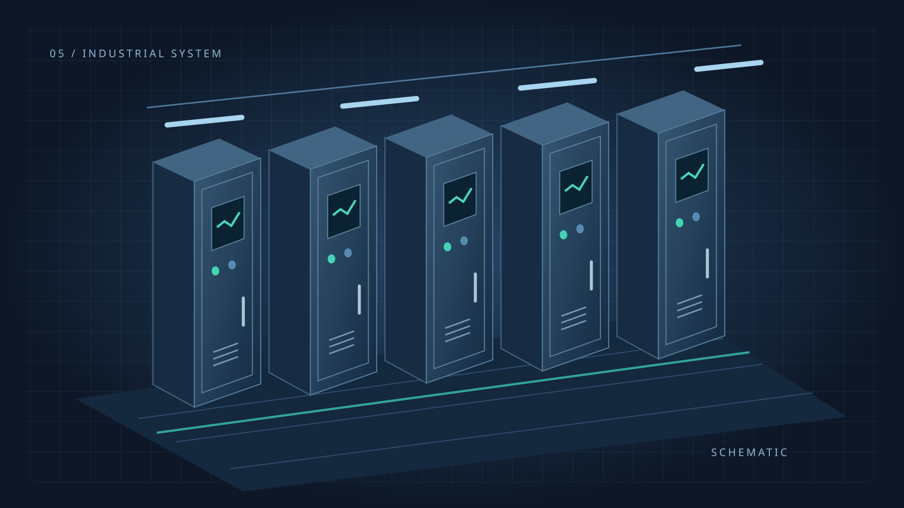
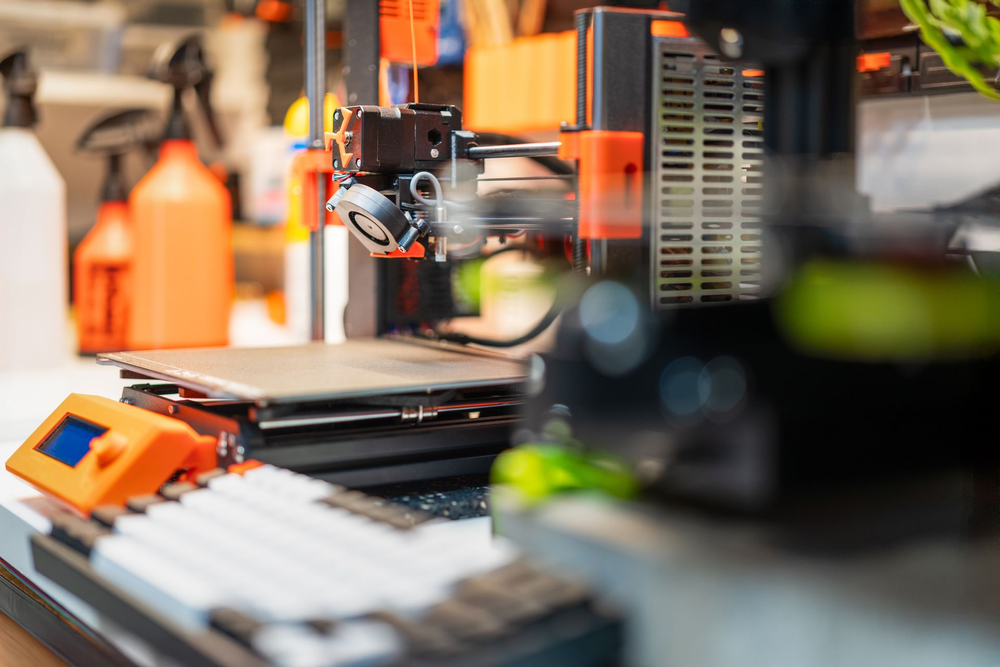

3D-печать в Ростове-на-Дону для бизнеса: прототипы, корпуса, оснастка и малые серии
3D-печать для бизнеса в Ростове-на-Дону: прототипы, корпуса, оснастка и малые серии с технической подготовкой, контрольным образцом и возможностью перейти в литьё в силиконовую форму.
FDM-печать — для функциональных деталей и оснастки. SLA-печать — для точных прототипов, гладких моделей и мастер-моделей под литьё.
- FDM и SLA под разные задачи
- Печать по готовой модели или с разработкой 3D-модели
- Прототипы, корпуса, крепления, оснастка и мастер-модели
- Малые серии для B2B-проектов
- Подбор материала под условия эксплуатации
- Возможность перейти к литью в силиконовую форму
Если модели нет, опишите задачу — оценим возможность проектирования и изготовления.
Иллюстрация: пример компоновки детали под печать
3D-печать для компаний, которым нужны не сувениры, а рабочие детали
Производственные предприятия
Для изготовления оснастки, фиксаторов, крышек, кожухов, шаблонов, технологических приспособлений и сервисных деталей.
Инженерные бюро
Для проверки конструкций, демонстрационных образцов, мастер-моделей и пилотных изделий.
Производители оборудования
Для корпусов, панелей, кронштейнов, креплений и комплектующих малыми партиями.
Рекламно-производственные компании
Для объёмных элементов, нестандартных деталей, макетов, POSM и презентационных образцов.
Автосервисы, тюнинг и реставрация
Для ненагруженных пластиковых деталей, элементов салона, заглушек, корпусов и декоративных элементов.
Стартапы с физическим продуктом
Для первого прототипа, тестовой партии и проверки продукта до затрат на оснастку.
Какие задачи закрывает 3D-печать
 Прототип · FDM / SLA
Прототип · FDM / SLA
Прототипы
- функциональные образцы
- посадочные макеты
- проверка сборки
- эргономические модели
- демонстрационные изделия

Корпус · печать корпусов на 3D-принтереКорпуса
- корпуса электроники
- корпуса приборов
- крышки
- панели
- кожухи
- защитные элементы

Оснастка · технический пластикПроизводственная оснастка
- кондукторы
- шаблоны
- ложементы
- фиксаторы
- контрольные калибры
- монтажные приспособления
Детали по образцу
- пластиковые детали
- крепления
- заглушки
- ручки
- переходники
- крышки
- элементы оборудования
Мастер-модели
- модели для силиконовых форм
- образцы для литья
- формы для последующей обработки
- высокодетализированные визуальные модели
Малые серии
- партии одинаковых деталей
- изделия для тестовой эксплуатации
- стартовые партии продукта
- временные серии до запуска основной технологии
FDM-печать — для функциональных деталей, корпусов и оснастки
Что такое FDM
FDM — технология послойной печати пластиковым филаментом. Она подходит для изделий, где важны скорость, прочность, доступная стоимость и возможность быстро внести изменения в конструкцию.
- корпуса
- крышки
- крепления
- кронштейны
- оснастку
- шаблоны
- кондукторы
- ложементы
- функциональные прототипы
- технические детали
- детали для примерки и сборки
- быстрое изготовление
- низкая стоимость запуска
- можно печатать крупные детали
- удобно менять модель между версиями
- подходит для технических изделий
- можно выпускать малые серии
- видимая слоистость
- не всегда подходит для декоративных гладких изделий
- свойства зависят от ориентации печати
- требует правильного выбора материала и направления нагрузки
- не заменяет промышленное литьё для больших тиражей
SLA-печать — для точных, гладких и детализированных моделей
Что такое SLA
SLA — фотополимерная 3D-печать, при которой изделие формируется из жидкой смолы. Технология подходит для деталей с высокой детализацией, гладкой поверхностью и точным воспроизведением мелких элементов.
- детализированные прототипы
- мастер-модели
- миниатюрные детали
- визуальные образцы
- декоративные элементы
- модели для силиконового литья
- корпуса небольшого размера
- изделия с тонкими элементами
- высокая детализация
- более гладкая поверхность
- точное воспроизведение мелких элементов
- хороший вариант для мастер-моделей
- подходит для презентационных образцов
- не всегда подходит для нагруженных деталей
- материал требует постобработки
- размеры изделия ограничены рабочей областью
- свойства фотополимеров нужно подбирать под задачу
- для функциональных деталей иногда лучше FDM или литьё
Сначала печать, затем серия через силиконовую форму
3D-печать часто используется как первый этап перед литьём. Типовой маршрут:
Создаём или проверяем 3D-модель
Печатаем прототип на FDM или SLA
Проверяем посадку, сборку и внешний вид
Вносим корректировки
Печатаем качественную мастер-модель
Изготавливаем силиконовую форму
Отливаем партию полиуретановых изделий
Когда это выгодно
Переход от 3D-печати к литью в силикон имеет смысл, если:
- нужно от 10 до 300 одинаковых изделий
- поверхность после печати недостаточно хороша
- печать каждого изделия занимает слишком много времени
- требуется другой материал
- нужна эластичность, прозрачность или определённый цвет
- клиент планирует повторные партии
Мы не ограничиваем проект только печатью. Если после прототипа видно, что серию выгоднее отлить, предложим переход к силиконовой форме.
Как проходит заказ
Присылаете задачу
3D-модель, чертёж, фото, образец или ТЗ
Проверяем модель
геометрия, стенки, размеры, материал, риски
Предлагаем маршрут
FDM, SLA, прототип, мастер-модель, серия или литьё
Согласуем цену и срок
технология, материал, количество, ограничения
Контрольный образец
для B2B-серий — образец до партии
Запускаем партию
после утверждения образца
Сохраняем параметры
модель, материал, технология, версия
Что нужно для расчёта
Если есть 3D-модель
Лучше всего прислать:
- STEP/STP — для инженерной доработки
- STL — для печати
- OBJ — для визуальных и некоторых моделей
- чертёж с критичными размерами
Если модели нет
Можно прислать:
- фото детали
- эскиз
- размеры
- описание назначения
- пример аналога
- место установки
- информацию о требуемом количестве
Для точного расчёта нужны
- размеры
- материал или условия эксплуатации
- количество
- требования к поверхности
- желаемый срок
- допустимые отклонения
- требования к цвету
- условия нагрузки
Материалы
FDM Для FDM
- PLA
- PETG
- ABS
- ASA
- TPU
- инженерные материалы после оценки задачи
SLA Для SLA
- стандартные фотополимеры
- прочные фотополимеры
- гибкие фотополимеры
- литейные или специальные смолы — по задаче
- материалы для мастер-моделей
Как выбирается материал
Не по названию, а по условиям эксплуатации:
Для каких отраслей
Производство
Оснастка, шаблоны, крепления, кожухи, сервисные детали.
Машиностроение
Прототипы, опытные детали, элементы оборудования, вспомогательные приспособления.
Электроника и автоматизация
Корпуса датчиков, контроллеров, блоков управления, панели, крепления.
Реклама и выставки
Объёмные элементы, POSM, презентационные образцы, макеты.
Ремонт и сервис
Детали по образцу, заглушки, крышки, ручки, элементы оборудования.
Стартапы и разработчики продукта
Прототипы, первые корпуса, тестовые партии, подготовка к литью.
Чем B2B-печать отличается от обычной 3D-печати
- материал
- версию модели
- критичные размеры
- допустимые отклонения
- внешний вид
- срок
- количество
Когда 3D-печать — не правильная технология
Мы отдельно предупреждаем, если:
- деталь слишком нагружена
- материал не подходит по температуре
- нужна сертификация
- требуется высокая герметичность без испытаний
- партия слишком большая и лучше перейти к литью
- поверхность SLA/FDM не соответствует ожиданиям
- изделие лучше изготовить на CNC или литьём под давлением
Такой подход экономит клиенту деньги и снижает риск ошибки.
Почему работать с нами
Подбор технологии под задачу
FDM, SLA, мастер-модель, силиконовая форма или комбинированный маршрут.
Техническая подготовка
Проверяем модель перед производством и предупреждаем о рисках.
Контрольный образец
Для серии сначала согласовываем первую деталь.
Работа с B2B-задачами
Корпуса, оснастка, комплектующие, мастер-модели, серии, а не только сувениры.
Повторяемость
Сохраняем версию модели и параметры производства для последующих заказов.
Производственная модель
На этапе запуска часть операций может выполняться на квалифицированных партнёрских площадках под нашим техническим сопровождением.
Мы отвечаем за:
Клиент получает одно окно для 3D-печати, мастер-моделей и малых серий.

Производственная площадка под техническим сопровождением
Сроки
| Этап | Срок | Условия | |
|---|---|---|---|
| 01 | Предварительная оценка | до 1 раб. дня | До 1 рабочего дня при наличии модели и понятного ТЗ. |
| 02 | FDM-печать | 1–3 дня | От 1–3 рабочих дней для простых изделий. |
| 03 | SLA-печать | 2–5 дней | От 2–5 рабочих дней в зависимости от размера, материала и постобработки. |
| 04 | Серия | по расчёту | Срок зависит от количества, загрузки, материала и необходимости контрольного образца. |
Возможны при наличии свободной мощности и оплачиваются отдельно.
Стоимость
От чего зависит цена
- технология
- материал
- размер
- масса
- машинное время
- сложность модели
- поддерживающие структуры
- риск брака
- постобработка
- точность
- количество
- срочность
Ориентиры
Мы не называем точную цену без модели, размеров и требований. Одинаковая по виду деталь может сильно отличаться по стоимости из-за материала, ориентации, точности и постобработки.
Примеры задач и реализованные кейсы
Иллюстративные маршруты под разные задачи — от прототипа до серии. Все кейсы анонимные; параметры приведены для типичных B2B-проектов и тестового стенда.
Корпус для электронного датчика
Заказчик из сферы приборостроения: нужно было проверить компоновку платы, расположение разъёмов и крепление до запуска серии.
РезультатКомпоновка подтверждена на прототипе, серия из 25 корпусов сдана без переделок.
Мастер-модель под силиконовую форму
Заказчику из сферы медтехники нужна гладкая мастер-модель для последующего литья небольшой партии в силикон.
РезультатГладкая мастер-модель легла в форму, серию отлили без потери детализации.
Сборочный шаблон для участка
Заказчик из сферы машиностроения: нужно быстро изготовить шаблон для сборки и при износе печатать повторно.
РезультатОснастку получили за 3 дня; параметры сохранены для быстрых повторов.
Восстановление детали по образцу
Заказчик из сферы сервиса и ремонта: есть сломанная пластиковая деталь без чертежей, нужна замена и небольшая серия.
РезультатПо образцу собрали 3D-модель, согласовали контрольную деталь и выпустили серию.
Рассчитать 3D-печать
Опишите вымышленную задачу — её текст появится ниже. Это локальная демонстрация формы без отправки заявки.
Если не знаете, какую технологию выбрать, просто опишите задачу. Мы предложим подходящий вариант.
Демо: ответа менеджера и отправки заявки не будет
* — обязательное поле: что нужно изготовить. Остальные поля — по желанию.
Пример заявки
Результат остаётся на этой странице. Мы ничего не отправляем и не сохраняем в хранилище браузера.
Частые вопросы
01Чем FDM отличается от SLA?
02Можно ли напечатать деталь без 3D-модели?
03Можно ли напечатать корпус для электроники?
04Можно ли напечатать серию?
05Что лучше для мастер-модели?
06Можно ли получить гладкую поверхность после FDM?
07Можно ли печатать инженерными пластиками?
08Можно ли срочно?
09Можно ли заказать только одну деталь?
Нужна 3D-печать для рабочей задачи, а не просто «распечатать файл»?
Пришлите модель, чертёж, фото детали или описание задачи. Мы подберём технологию, материал и производственный маршрут: FDM, SLA, мастер-модель, серия или переход к литью в силикон.